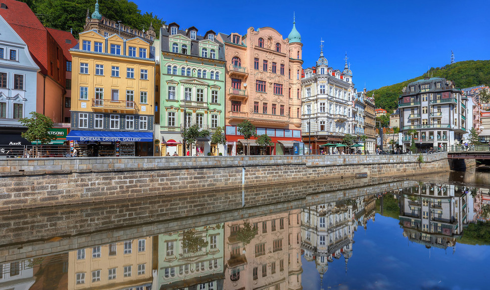
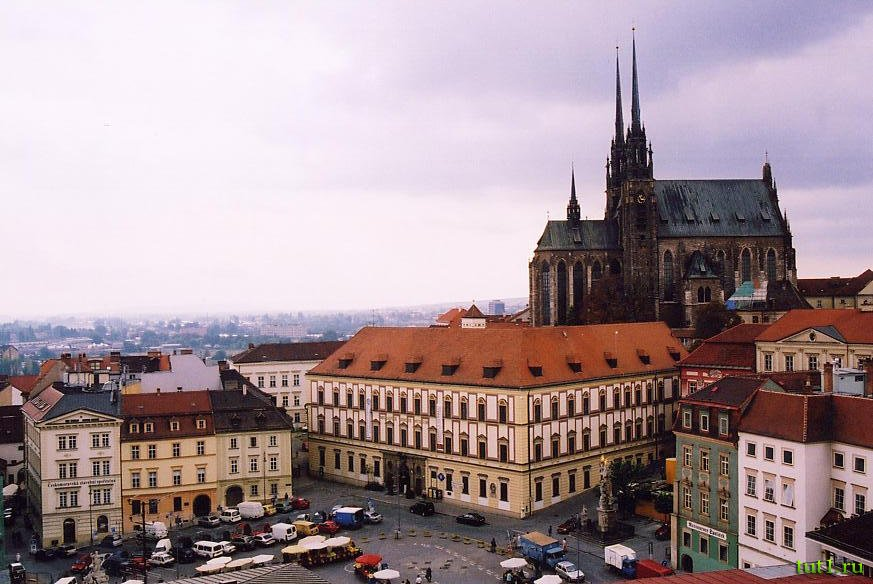

Prague

Prague is the capital and largest city of the Czech Republic. It is the 15th largest city in the European Union.It is also the historical capital of Bohemia. Situated in the north-west of the country on the Vltava River, the city is home to about 1.24 million people, while its larger urban zone is estimated to have a population of nearly 2 million. The city has a temperate climate, with warm summers and chilly winters. Prague has the lowest unemployment rate in the European Union.
Karlovy Vary

Karlovy Vary or Carlsbad is a spa town situated in western Bohemia, Czech Republic, on the confluence of the rivers Ohře and Teplá, approximately 130 km (81 mi) west of Prague (Praha). It is named after King of Bohemia and Holy Roman Emperor Charles IV, who founded the city in 1370. It is historically famous for its hot springs (13 main springs, about 300 smaller springs, and the warm-water Teplá River). It is the most visited spa town in the Czech Republic.
Brno

Brno is the second largest city in the Czech Republic by population and area, the largest Moravian city, and the historical capital city of the Margraviate of Moravia. Brno is the administrative center of the South Moravian Region in which it forms a separate district (Brno-City District). The city lies at the confluence of the Svitava and Svratka rivers and has about 400,000 inhabitants; its greater metropolitan area is home to more than 800,000 people while its larger urban zone had population of about 730,000 in 2004.